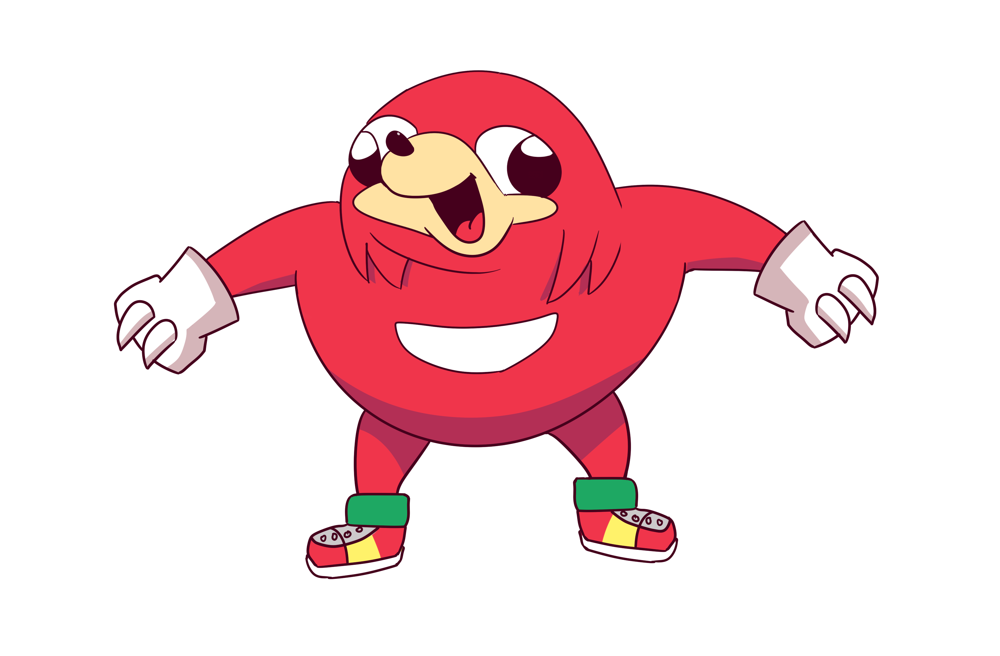
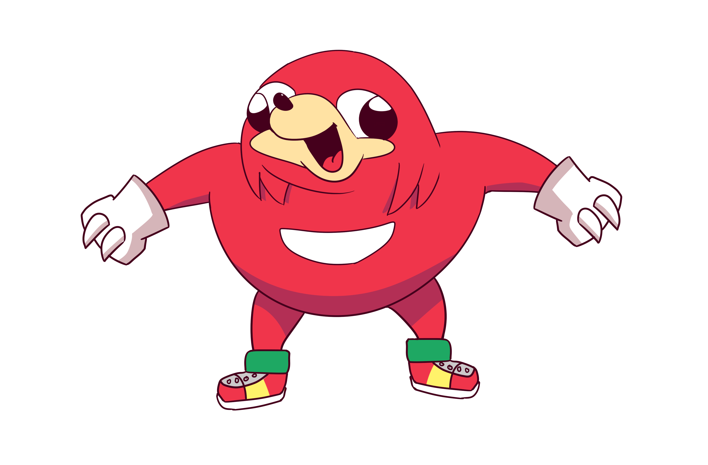
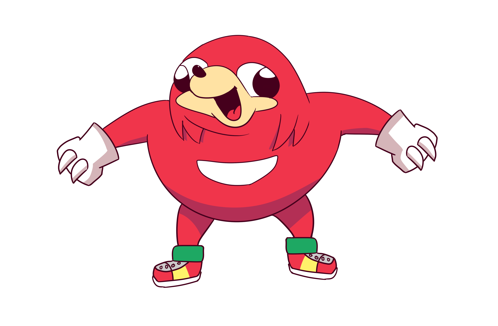
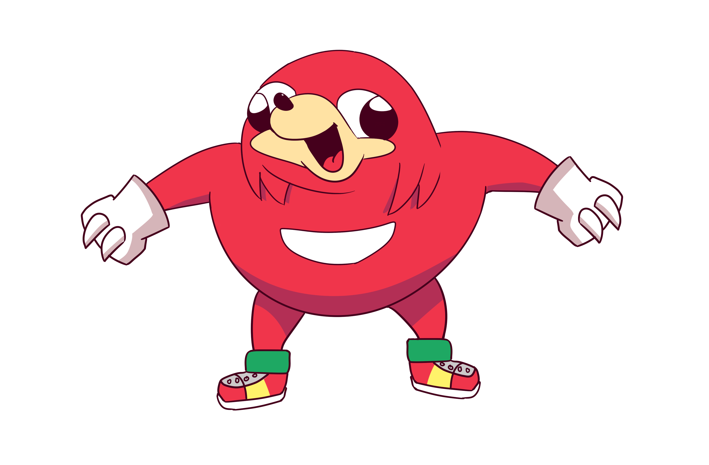

Perry Li
 



Perry was born and raised in China, but the heavy smog and pollution there made him venture in Vancouver, Canada, only to be greeted by the heavy rain and snow.
Perry used to enjoy playing PC games, badminton, and sleep, but now he enjoys studying for CST instead. He is also an avid chess player and can usually be found taking a needlessly long amount of time to make a move.
Needless to say, Perry's favourite course is BUSA 2720.
Perry can be reached at pli100@my.bcit.ca